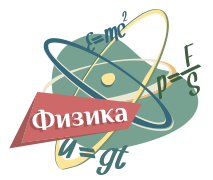
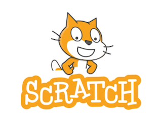
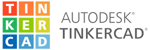
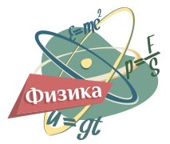
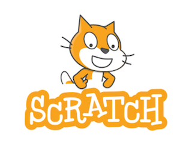
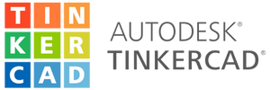
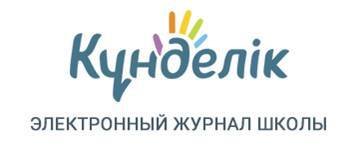

Методические рекомендации
Внедрение виртуальных лабораторий в учебный процесс может значительно повысить интерес и успеваемость учеников, особенно в STEM-дисциплинах. Вот ключевые рекомендации для учителей:
Изучите доступные методические рекомендации,котоорые предлагает платформа
 





- Выбор задач, соответствующих программе: Определите, какие разделы учебного плана лучше всего подходят для виртуальных экспериментов. Например, используйте симуляции для сложных тем, которые трудно воспроизвести в реальной лаборатории.
- Реализация с оценкой знаний: Используйте виртуальные лаборатории как часть домашней работы или оценочных мероприятий, чтобы проверить понимание пройденного материала.
В виртуальных лабораториях на практике возможно изучить все разделы физики!
Коллаборация и рефлексия:
Проводите обсуждения результатов виртуальных экспериментов в классе, где ученики смогут поделиться своим опытом и наблюдениями. Это помогает закрепить знания и улучшить понимание.
Тестирование и оценка:
Виртуальные лаборатории часто предоставляют инструменты для автоматической оценки результатов, что помогает учителю эффективно проверять знания учеников.
